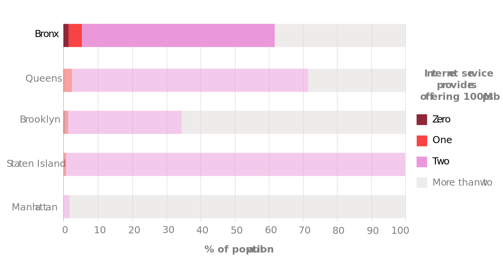
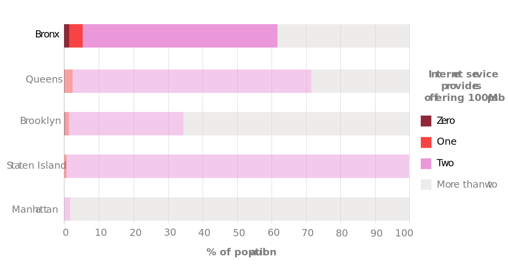

Six-year-old Heaven has spent most of her school life at home.
Her desk is a TV-dinner-style folding table pushed up against the window. An iPad propped up on the table is her portal to teachers and classmates. She enjoys her lessons, especially art and chess, but is not a fan of sports – she has to relocate into the more spacious hallway whenever it is time for her daily exercise of squats and jumping jacks.
Learning from home is routine for Heaven and, with the help of her mother Juanita, she is making progress at school. But the pair have been hindered by one seemingly intractable problem: their perpetual battle for decent internet access. Their poor WiFi connection has led to difficulties with hearing teachers, submitting work, and joining classes. These issues have been so consistent that Heaven, like many children growing up in the Bronx during the pandemic, has become an expert internet troubleshooter.
“She knows how to fix it from watching me,” said Juanita. “But sometimes it just goes out. Then there is nothing we can do.”
According to a 2020 report from the Mayor’s Office, over 1.5 million New Yorkers have no home or mobile broadband. Across the city, and especially in poor, majority non-white areas, this has meant children struggling to attend remote classes. Where only low-quality streaming is available, students have had to deal with fragmented audio and lag. In households that cannot afford the internet bills, some children have simply dropped off the map.
Now, community groups have decided to take matters into their own hands. In chronically underinvested areas like the Bronx and Harlem, coalitions have come together to fight for equitable access to the internet. Disillusioned with expensive internet providers and ineffective public interventions, some are attempting to create community-owned, affordable alternatives that will boost their children’s access to education during the pandemic and beyond.
When schools were ordered to shut on March 16th last year, even institutions that were well-positioned for remote learning faced big problems. Comp Sci High, a newly launched charter school in the South Bronx, has digital literacy built into its DNA. Every student had been issued a Chromebook, the teachers were well-versed in Google classroom, and principal David Noah dashed from home-to-home to hand out extra devices to any students who needed them. But straight away, they found online learning immensely challenging.
“For most poor kids, remote learning is an educational disaster,” said Noah. “What would take one lesson under normal circumstances takes a week with Covid.”
Students in crowded households would join classes from underneath blankets in an effort to block out noisy families. Others disappeared for days at a time only to reappear from halfway across the country, forced to relocate due to housing insecurity. And when parents’ internet bills went unpaid, it became a major effort to stay in contact. At schools with fewer resources, the problems have been even more pronounced.
“Students who don't have access to the internet, or don't have a device that can connect to the internet, just haven't been to school,” said Rose DeStefano, a Senior Director at Children's Aid. These students are overwhelmingly from poor neighborhoods – data from the Department of Education (DOE) and the Mayor’s Office shows a firm correlation between poverty and broadband adoption in New York City.

 
